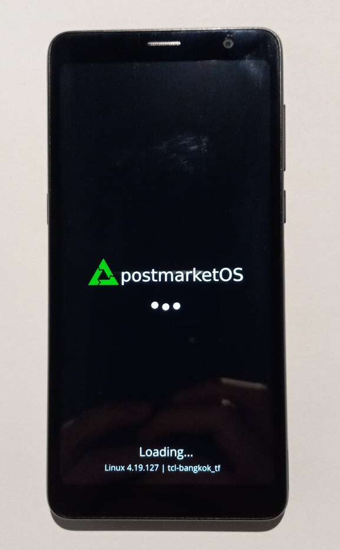

TCL A3 (tcl-bangkok_tf)
|
 The TCL A3 with the postmarketOS splash screen running the downstream kernel. | |
| Manufacturer | TCL |
|---|---|
| Name | A3 |
| Codename | tcl-bangkok_tf |
| Released | 2021 |
| Category | testing |
| Original software | Android |
| Original version | 11 |
| postmarketOS kernel | 6.5.0-rc5 |
| Hardware | |
| Chipset | MediaTek Helio P22 (MT6762) |
| CPU | Octa-core 2.0 GHz Cortex-A53 |
| GPU | PowerVR GE8320 |
| Display | 720x1440 TFT LCD |
| Storage | 32 GB |
| Memory | 3 GB |
| Architecture | aarch64 |
| Type | handset |
| Unixbench Whet/Dhry score | ? |
{kind=link}
| USB Networking |
Broken
|
|---|---|
| Flashing |
Works
|
| Touchscreen |
Broken
|
| Display |
Broken
|
| WiFi |
Broken
|
| FDE |
Broken
|
| Mainline |
Partial
|
| Battery |
Broken
|
| 3D Acceleration |
Broken
|
| Audio |
Broken
|
| Bluetooth |
Broken
|
| Camera |
Broken
|
| GPS |
Broken
|
| Mobile data |
Broken
|
| SMS |
Broken
|
| Calls |
Broken
|
| USB OTG |
Broken
|
| NFC |
Broken
|
| Accelerometer |
Broken
|
|---|---|
| Magnetometer |
Broken
|
| Ambient Light |
Broken
|
| Proximity |
Broken
|
| Hall Effect |
Unavailable
|
| Barometer |
Broken
|
| Power Sensor |
Broken
|
| Camera Flash |
Broken
|
|---|---|
| Keyboard |
Unavailable
|
| Touchpad |
Unavailable
|
| USB-A |
Unavailable
|
| HDMI/DP |
Unavailable
|
| Ir TX |
Unavailable
|
| Ir RX |
Unavailable
|
| Stylus |
Unavailable
|
| Haptics |
Broken
|
| Ethernet |
Unavailable
|
| FOSS bootloader |
Broken
|
| While the kernel compiles and flashing is available, this device is in an extremely early state of development. Here Be Dragons |
The TCL A3 is a low-range smartphone manufactured by TCL. The device is quite powerful for its low price-point, making it a prime candidate for porting. The device is always carrier locked to the U.S. carrier Tracfone. The back cover can be removed with a small notch on the bottom right portion of the phone. Removing this reveals one microsd card slot, one sim card slot, and the battery, which is removable.
Contributors
- Justsoup
- hexaheximal
- adomerle
Users owning this device
- Justsoup (Notes: Attempting to Port)
How to enter flash mode
- Recovery: Power on the device while holding Volume Up + Power.
- MTKClient: Hold Volume Up + Volume Down and plug the device into the host computer running MTKClient.
| Before following any installation method, follow the MTKClient section to unlock the bootloader. Installing TWRP is optional but highly recommended. |
Installation (pmbootstrap)
Use pmbootstrap to build your own installation image.
| While it is possible to flash to system, it is recommended to flash to userdata to make use of most of the device's space and to make the transition back to Android easier. |
$ pmbootstrap init
$ pmbootstrap install
$ pmbootstrap flasher flash_kernel
$ pmbootstrap flasher flash_rootfs
$ pmbootstrap flasher flash_dtbo
Installation (recovery)
The normal pmbootstrap flashing can take a while depending on the user interface chosen. As such, flashing with the recovery installation is also supported.
Use pmbootstrap to build your own installation image.
$ pmbootstrap init
$ pmbootstrap install --android-recovery-zip --recovery-install-partition=data
Put TWRP into sideload mode.
$ pmbootstrap flasher --method=adb sideload
The install will error around 59%. This is to be expected. If the device states that the installation was completed, then this error can be ignored and flashing is complete.
MTKClient
Due to the disabling of fastboot in the device bootloader, it is required that TWRP is installed to flash easily. As such, to install TWRP in the first place, a tool called MTKClient is required.
To install TWRP:
- Unlock Bootloader
$ python mtk e metadata,userdata,md_udc
$ python mtk da seccfg unlock
$ python mtk reset- Download TWRP
- Flash to Recovery
$ python mtk w recovery <name of TWRP file>
$ python mtk resetThen, reboot your device and TWRP should be installed. Enter TWRP by holding Power + Volume Up during boot.
Feature Progress
| Feature | Model | State | Notes |
|---|---|---|---|
USB Networking
|
Unknown | Broken | Initial dts nodes added. USB initializes but only a very weak connection can be made to the device. |
Flashing
|
N/A | Works | With the addition of MTKClient as a flashing option, flashing is available. |
Touchscreen
|
Focaltech(?) | Broken | No work done yet for mainline. |
Display
|
Zhunyi Z69001-ZC (gc9702p) | Broken | No mainline driver. Work is being done to create one. |
Framebuffer
|
Unknown | Broken | See Display. |
WiFi
|
Unknown | Broken | No work done yet for mainline. |
FDE
|
N/A | Broken | No work done yet for mainline. |
Mainline
|
N/A | Partial | Justsoup has added basic mt6762 support to a mainline fork but is only able to get past the bootloader. |
Battery
|
TLi028C7 (Alcatel Branding) | Broken | No work done yet for mainline. |
3D Acceleration
|
PowerVR GE8320 | Broken | No work done yet for mainline. |
Audio
|
Unknown | Broken | No work done yet for mainline. |
Bluetooth
|
Unknown | Broken | No work done yet for mainline. |
Camera
|
Unknown | Broken | No work done yet for mainline. |
GPS
|
Unknown | Broken | No work done yet for mainline. |
Mobile Data
|
Unknown | Broken | No work done yet for mainline. |
SMS
|
Unknown | Broken | No work done yet for mainline. |
Calls
|
Unknown | Broken | No work done yet for mainline. |
USB OTG
|
Unknown | Broken | No work done yet for mainline. |
NFC
|
Unknown | Broken | No work done yet for mainline. |
Accelerometer
|
Unknown | Broken | No work done yet for mainline. |
Magnetometer
|
Unknown | Broken | No work done yet for mainline. |
Ambient Light
|
Unknown | Broken | No work done yet for mainline. |
Proximity
|
Unknown | Broken | No work done yet for mainline. |
Barometer
|
Unknown | Broken | No work done yet for mainline. |
Power Sensor
|
Unknown | Broken | No work done yet for mainline. |
Camera Flash
|
Unknown | Broken | No work done yet for mainline. |
Haptics
|
Unknown | Broken | No work done yet for mainline. |
Downstream
|
N/A | Works | Abandoned. Only the display and storage access works. |
FOSS Bootloader
|
N/A | Broken | MediaTek secure boot is enabled so a new lk cannot be flashed. Most likely will require a U-Boot port. |
Mainlining
The mainlining workflow for this device is the following:
- Patch Kernel
- Commit
mtk e expdbpmbootstrap flasher flash_kernel- Boot Device Twice
- Remove Battery Before Third Boot
mtk r expdb expdb.img- Read expdb.img as a Text File
- Read Logs from expdb.img
Bugs
- Sometimes TWRP is unable to read the /data partition. An easy fix is to wipe the partition using TWRP [THIS WILL WIPE YOUR PMOS INSTALL AND/OR ANY ANDROID DATA LEFTOVER] and then continue with flashing.
- USB Networking is hindered by some form of power issue within the kernel drivers.